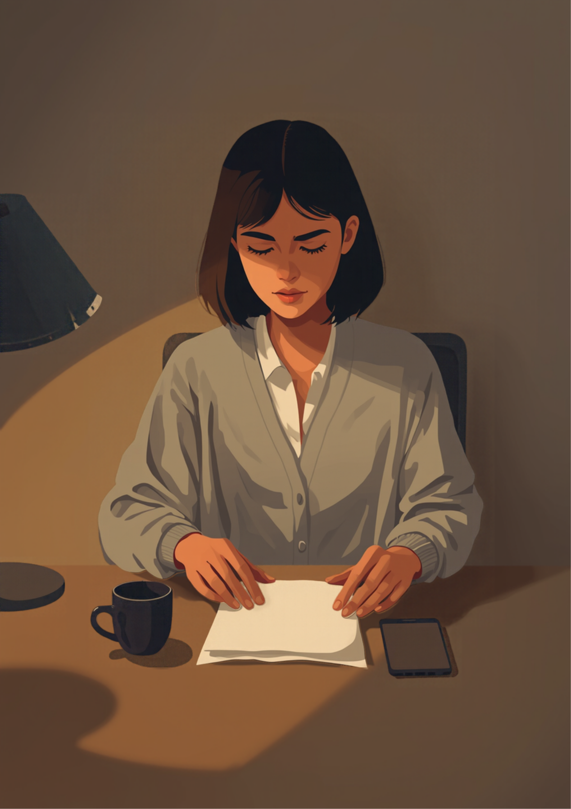
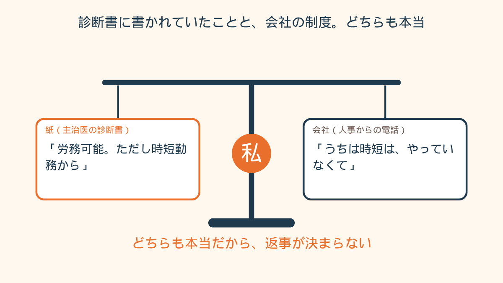
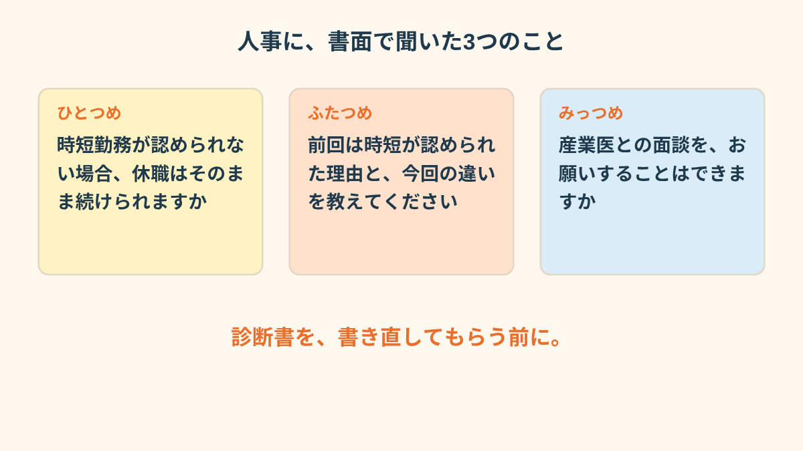

人事の人は、ふつうの声でそう言いました。
診断書をメールで送って、4日目の夕方5時すぎ。
私は台所で、鍋に火をつけたところでした。
「時短から」と書いてもらった日
33歳、経理をしてました。
休職5ヶ月目。
その週の診察で、先生に「そろそろ、戻ることを考えたいです」と言ってみたんです。
言った瞬間、自分でびっくりして。
半年前は、会社の名前を聞くだけで胃が固まってたのに。
先生は少し黙って、それから「いきなりフルタイムは、まだ早いかもしれませんね」と言いました。
その場で書いてくれた紙には、こうありました。
「労務可能。ただし時短勤務から復帰のこと」
帰りの電車で、その1行を何回も見ました。
うれしい、が半分。
もう半分は、「本当に戻るんだ」という怖さ。
でも、あまり心配はしてなかったんです。
2年前にも休職してて、そのときは時短で戻れたから。
最初の2ヶ月は午前だけで、昼に帰らせてもらってた。
だから今回も、診断書を出せば同じ流れになるんだろう、くらいに思ってました。

夕方5時すぎの電話
診断書は、写真を撮って、上司あてのメールに添付しました。
「来月あたりから、時短で戻れたらと考えています」と、2行だけ添えて。
返事は来なくて、3日たって。
4日目の夕方に、知らない番号から着信がありました。
人事でした。
声は穏やかでした。
「診断書、拝見しました。ご回復に向かっておられて何よりです」と、最初に言われて。
そのあとです。
「ただ、うちは今、時短勤務の制度自体がなくて。前回は特例だったんですよ」
特例。
その2文字を、私はたぶん3回くらい頭の中で繰り返してました。
前回は、特例。
そんなこと、あのとき誰にも言われてない。
「フルタイムでの復帰が難しいということでしたら、引き続き休職、という形になりますが」
休職期間の満了まで、あと2ヶ月ちょっとでした。
頭の中でカレンダーをめくってたら、口が勝手に「あ、はい、分かりました」と言ってました。
電話を切って、鍋を見たら、火をつけたまま3分くらい放ってて。
お米は、少し焦げてました。
分かってないのに「分かりました」と言うの、昔からの癖なんです。
「うちも時短の話をしたら、人事に『前例がないので』って言われました。診断書は先生がせっかく書いてくれたものなのに、会社の一言で、ただの紙になった気がして。その夜は、先生にも悪いことをした気分で、診察の予約を見るのも嫌でした。結局、3日くらいスマホを見ないで過ごしました」
書き直してもらう、という考えが浮かんだ夜
その夜、検索ばかりしてました。
「復職 診断書 時短 認められない」と打って、出てきたページを3つくらい読んで。
その中に、「労務不可の診断書を取り直す」という言葉があって、手が止まった。
先生に「会社が時短はだめと言ってて」と話したら、「じゃあ、書き直しましょうか」と言われるかもしれない。
それで休職は続けられるのかもしれない。
でも、それって、本当は少し動けるのに、動けないと書いてもらうことじゃないのか。
逆に、書き直さずにフルタイムで戻ったら、たぶん2週間もたない。
それも分かってる。
どっちを選んでも、どこかが嘘になる気がして、布団の中で天井を見てました。

「診断書を取り直したいって先生に言うの、正直、めちゃくちゃ怖かったです。元気になったって思われるのも怖いし、『やっぱり働きたくないんでしょ』って思われるのも怖い。実際は、会社がこう言ってるんですって事実だけ話したら、先生は『それは会社と相談するところですね』って。拍子抜けしました。思ってたほど、先生は私のこと疑ってなかった」
先生に頼む前に、人事に聞いたこと
3日目の夜に、診察の予約だけは入れました。
でも、その前に、人事にメールを1通書きました。
電話だと、また「分かりました」と言ってしまうから。
聞いたのは、3つだけです。
時短が認められない場合、休職はこのまま続けられるのか。
前回は認められたのに、今回は難しいのはどうしてか。
産業医さんと話す場を、設けてもらえるか。
返事は、翌々日に来ました。
休職は規程の期間内なら続けられること。
前回の件は「当時の判断」としか書かれてなくて、正直、そこは分からないままだったこと。
産業医との面談は、来週に入れてもらえたこと。
すっきりは、してません。
時短で戻れる、という話にはなってないから。
復職の話は、振り出しに戻ったような気もして、その夜も台所に少し立ってました。
ただ、診断書は、書き直してもらってません。
診察では、先生に「会社が時短は難しいと言ってます」と、言われたことをそのまま話しました。
先生は「産業医さんの意見も聞いてみましょうか」と言って、それ以上は何も足さなかった。
あのときは、それがいちばんありがたかった。

この記事に、聞いてみたいことはありますか？
「自分の場合はどうなんだろう」と思ったことを、気軽に書いてみてください。いただいた質問は個別にお返事したうえで、匿名で記事にすることがあります。